# 安装包
if (!requireNamespace("tidyverse", quietly = TRUE)) {
install.packages("tidyverse")
}
if (!requireNamespace("gggenes", quietly = TRUE)) {
install.packages("gggenes")
}
if (!requireNamespace("ggtree", quietly = TRUE)) {
install.packages("ggtree")
}
# 加载包
library(tidyverse)
library(gggenes)
library(ggtree)基因结构图
在生物学，尤其是分子生物学研究中解析基因的表达调控模式一直以来都是研究的重点内容，而在此过程中难免会有绘制一个基因的结构或者上下游关系的需求，因此本教程将基于R包gggenes对常见的一些基因结构画法进行总结。
示例
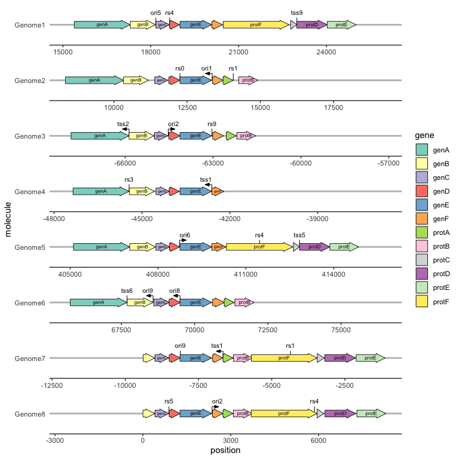
环境配置
系统要求： 跨平台（Linux/MacOS/Windows）
编程语言：R
依赖包：
tidyverse;gggenes;ggtree
数据准备
数据使用gggenes中自带的example_genes数据集、example_subgenes数据集以及example_features数据集，分别记录了基因的位置信息、基因子结构的位置信息、基因上标记点的位置信息。
example_genes为一个数据框（dataframe），包含一个记录染色体或链信息的列作为纵坐标，一个记录基因或序列ID的列作为染色的映射索引，两个记录基因起始和终止位置的列，一个记录基因方向的列，每一行为一个基因，下表为example_genes的数据示例：
head(example_genes) molecule gene start end strand orientation
1 Genome1 genA 15389 17299 reverse 1
2 Genome1 genB 17301 18161 forward 0
3 Genome1 genC 18176 18640 reverse 1
4 Genome1 genD 18641 18985 forward 0
5 Genome1 genE 18999 20078 reverse 1
6 Genome1 genF 20086 20451 forward 1example_subgenes需要包含example_genes的所有列，并且需要额外包含一个记录基因子结构ID的列，两个记录基因子结构起始和终止位置的列，每一行为一个基因子结构，下表为example_subgenes的数据示例：
head(example_subgenes) molecule gene start end strand subgene from to orientation
1 Genome5 genA 405113 407035 forward genA-1 405774 406538 0
2 Genome5 genB 407035 407916 forward genB-1 407458 407897 0
3 Genome5 genC 407927 408394 forward genC-1 407942 408158 0
4 Genome5 genC 407927 408394 forward genC-2 408186 408209 0
5 Genome5 genC 407927 408394 forward genC-3 408233 408257 0
6 Genome5 genF 409836 410315 forward genF-1 409938 410016 0example_features需要包含一个记录染色体或链信息的列，一个记录标记点名称的列，一个记录标记点类型的列，一个记录标记点位置的列，一个记录标记点方向的列，每一行为一个标记，下表为example_features的数据示例：
head(example_features) molecule name type position forward
1 Genome1 tss9 tss 22988 NA
2 Genome1 rs4 restriction site 18641 NA
3 Genome1 ori5 ori 18174 NA
4 Genome2 rs0 restriction site 12256 NA
5 Genome2 rs1 restriction site 14076 NA
6 Genome2 ori1 ori 13355 FALSE可视化
1. 基因结构图基础
gggenes作为ggplot2的扩展，其功能由一个主要函数geom_gene_arrow以及若干次要函数完成，首先介绍gggenes的基础用法：
1.1 绘制一连串的基因相对位置
# 绘制一连串的基因相对位置
ggplot(example_genes, aes(xmin = start, xmax = end, y = molecule)) +
geom_gene_arrow() +
facet_wrap(~ molecule, scales = "free", ncol = 1) # gggenes通常配合facet_wrap函数进行分面使用。需要注意的是，画图界面过小的话会提示报错：“Viewport has zero dimension(s)”，只需将画图窗口拉大或者设置更大的界面即可。
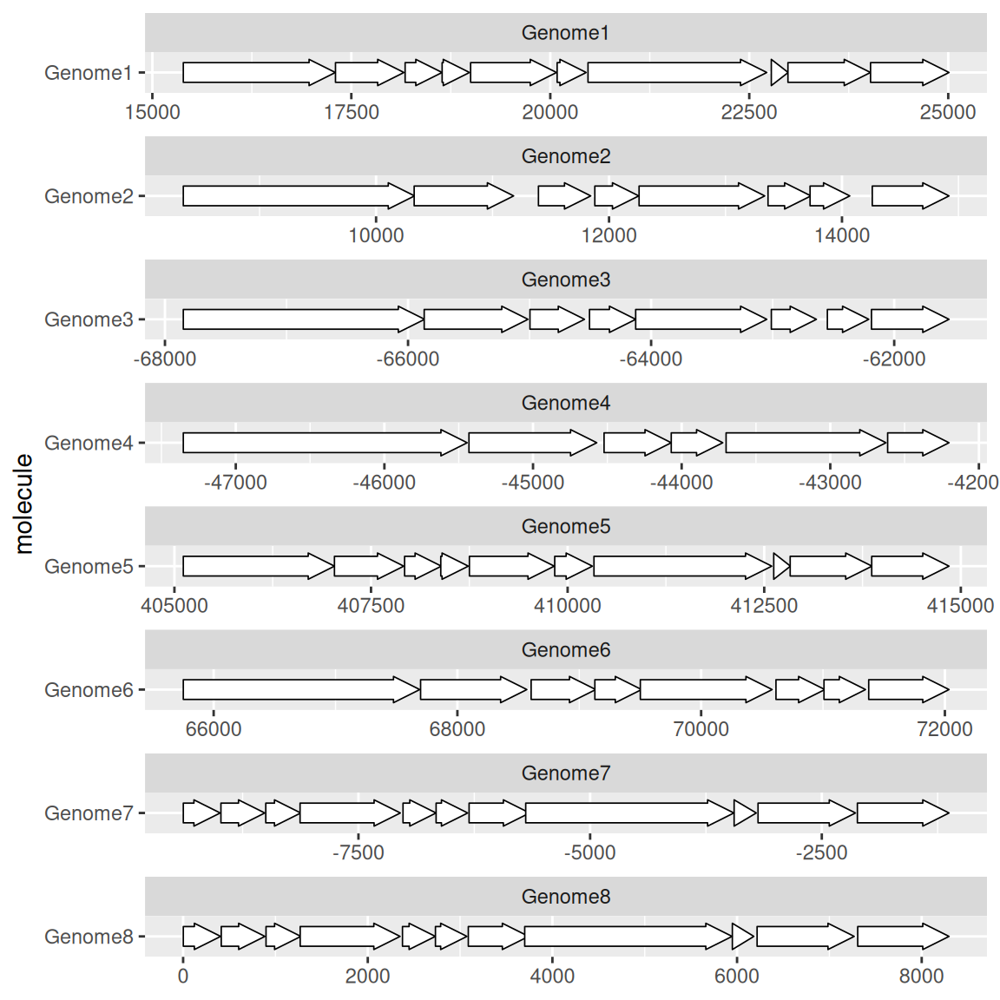
1.2 绘制一组基因
如果关注的是基因本身的结构而不是基因的位置可以将基因ID作为纵轴：
# 绘制一组基因
df <- subset(example_genes, molecule == "Genome4")
df$end <- df$end-df$start
df$start <- 1
ggplot(df, aes(xmin = start, xmax = end, y = gene)) +
geom_gene_arrow()
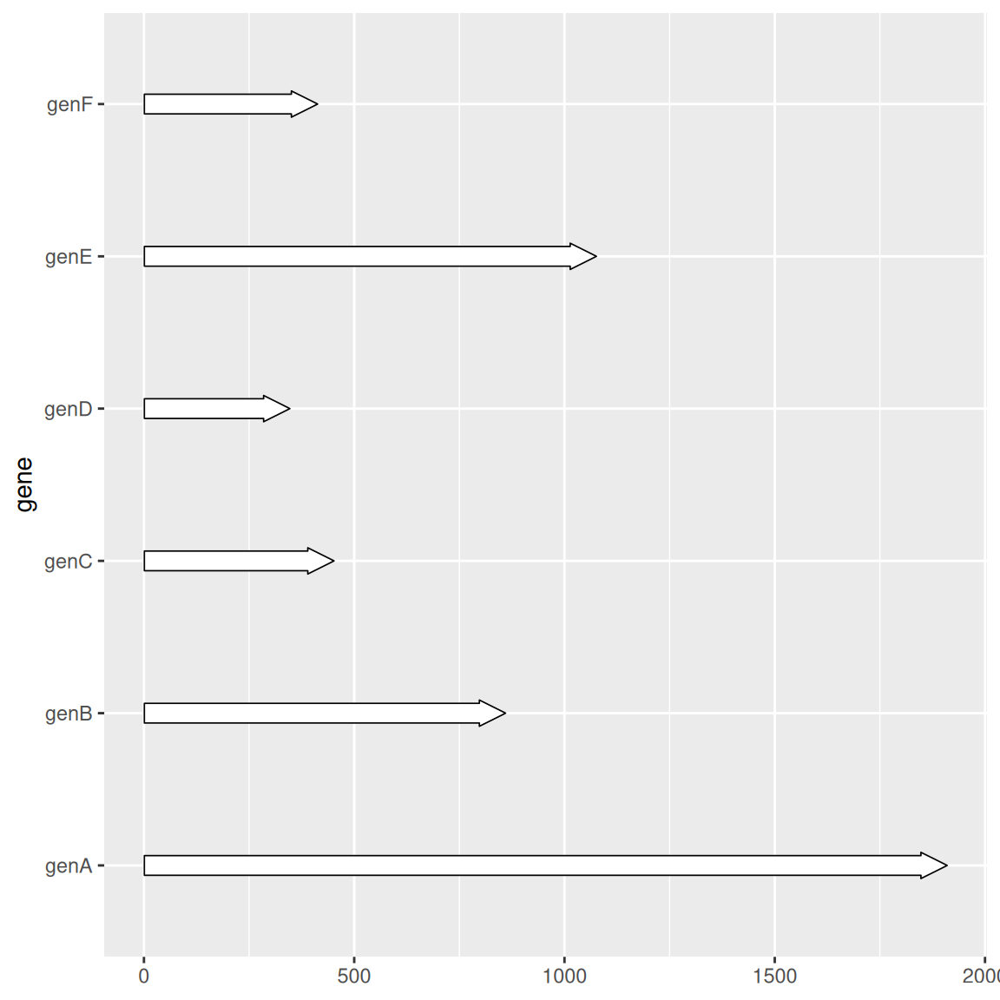
1.3 绘制基因子结构
有时我们会关注于基因上更精细的结构，比如CDS位置或者特殊的motif位置等，此时则需要gggenes中提供的另一个扩展函数geom_subgene_arrow来完成，需要注意的是虽然example_subgenes也可以作为geom_gene_arrow的输入但是由于数据中的每一行都会创建一个基因的轮廓图像，因此在一个基因含有多个子结构的时候不建议这么做，建议的使用方法还是将基因信息以及子结构信息单独分为俩个数据框处理。使用方法如下：
# 绘制基因子结构
ggplot(example_genes, aes(xmin = start, xmax = end, y = molecule)) +
facet_wrap(~ molecule, scales = "free", ncol = 1) +
geom_gene_arrow(fill = "white") +
geom_subgene_arrow(data = example_subgenes,
aes(fill = gene, xsubmin = from, xsubmax = to),
color="black", alpha=.7)
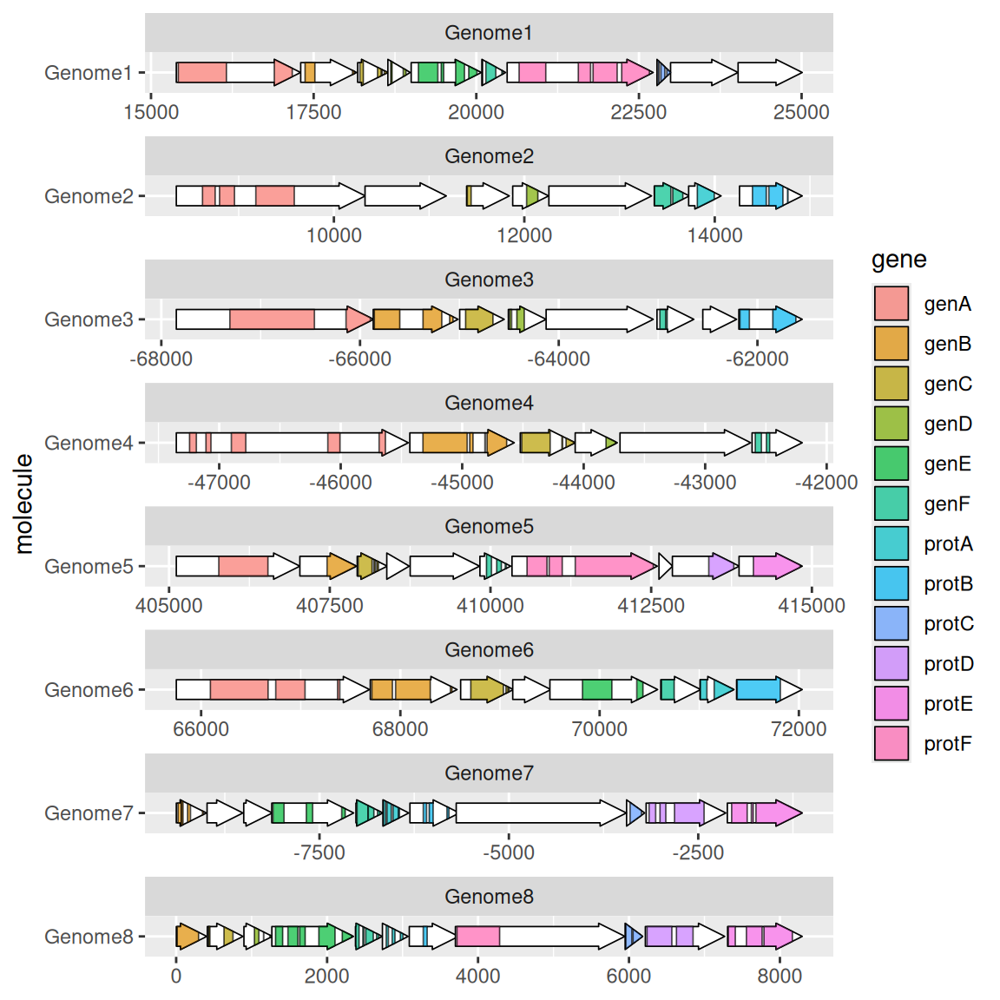
1.4 绘制基因标记点
有时我们会关注基因或序列上的某个特殊点位，例如酶切位点或者启动子位点等，与基因或者其子结构不同的是标记常常为一个或有限的几个碱基，此时不适合使用箭头的画图方法，而geom_feature和geom_feature_label拓展函数则可以很好的完成这种标记任务：
# 绘制基因标记点
ggplot(example_genes, aes(xmin = start, xmax = end, y = molecule)) +
facet_wrap(~ molecule, scales = "free", ncol = 1) +
geom_gene_arrow(fill = "white")+
geom_feature(
data = example_features,
aes(x = position, y = molecule, forward = forward)
) +
geom_feature_label(
data = example_features,
aes(x = position, y = molecule, label = name, forward = forward),
feature_height = unit(4, "mm"), #当标记点无法正常显示时，可以设置该参数调整标记的标签高度
label_height = unit(3, "mm") #当标记点标签大小不合适时，可以设置该参数调整标记的标签大小
) +
theme_genes() #这个主题下面会提到
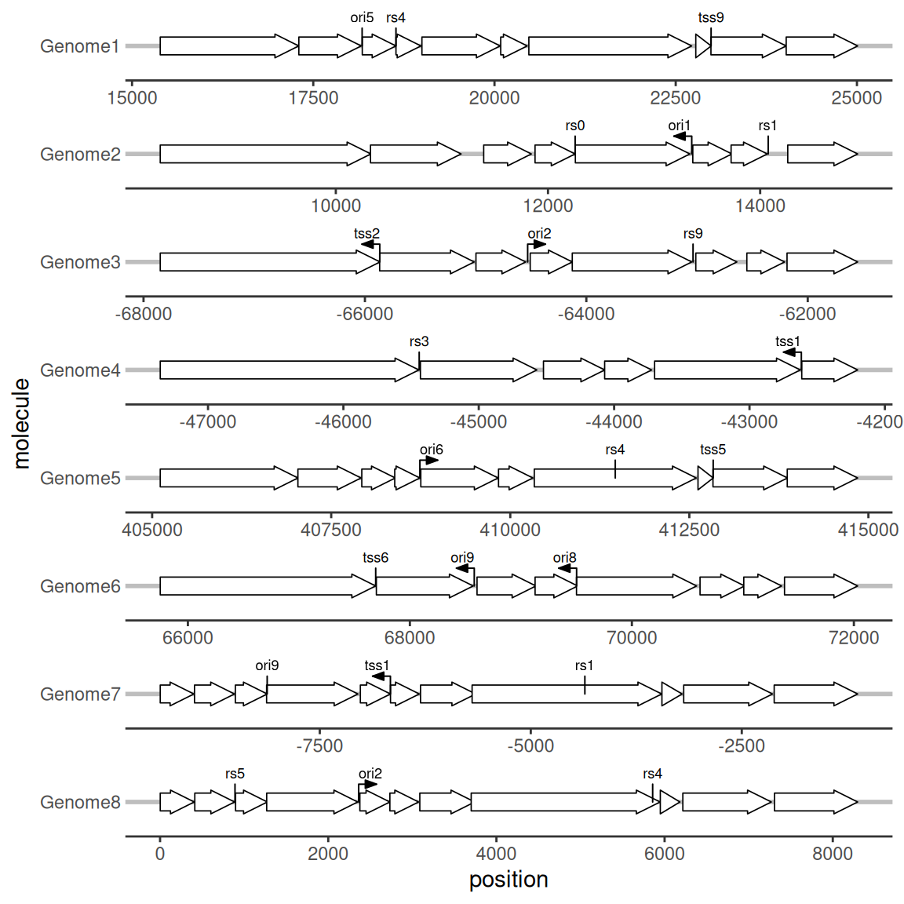
1.5 与进化树和作图
我们可能会关注不同物种或品种在某个染色体区域的基因差异，此时我们可以将进化树与基因结构图联用，除了使用拼图的方法以外，R包ggtree也提供了一个接口用于二者联用： 首先我们需要获取一个树结构，这里直接用gggenes的数据集构造一个tree，实际使用时读取一个树文件即可。 根据基因结构生成一个进化树，实际使用不需要生成：
get_genes <- function(data, genome) {
filter(data, molecule == genome) %>% pull(gene)
}
g <- unique(example_genes[,1])
n <- length(g)
d <- matrix(nrow = n, ncol = n)
rownames(d) <- colnames(d) <- g
genes <- lapply(g, get_genes, data = example_genes)
for (i in 1:n) {
for (j in 1:i) {
jaccard_sim <- length(intersect(genes[[i]], genes[[j]])) /
length(union(genes[[i]], genes[[j]]))
d[j, i] <- d[i, j] <- 1 - jaccard_sim
}
}
tree <- ape::bionj(d) 画图时使用ggtree函数，并在geom_facet中指定基因结构数据，并指定geom = geom_motif panel = 'Alignment'，on 参数用于指定需要对齐的基因名称（必须是所有物种共有的，如果没有的话暂时不知道怎么设置）。坐标映射参数为xmin和xmax。需要注意的是在上方被作为纵轴的染色体ID（这里可以是不同物种的名称）必须位于数据框的第一列，ggtree会通过比较树的枝标签以及基因结构的第一列来决定基因结构的纵轴位置。 画图代码如下：
# 与进化树和作图
ggtree(tree, branch.length='none') +
geom_tiplab() + xlim_tree(5.5) +
geom_facet(data = example_genes,
geom = geom_motif,
mapping = aes(xmin = start, xmax = end, fill = gene),
panel = 'Alignment',on = 'genE',
label = 'gene', align = 'left') +
scale_fill_brewer(palette = "Set3") + #修改配色的方法下面会提到
scale_x_continuous(expand=c(0,0)) +
theme(strip.text=element_blank())
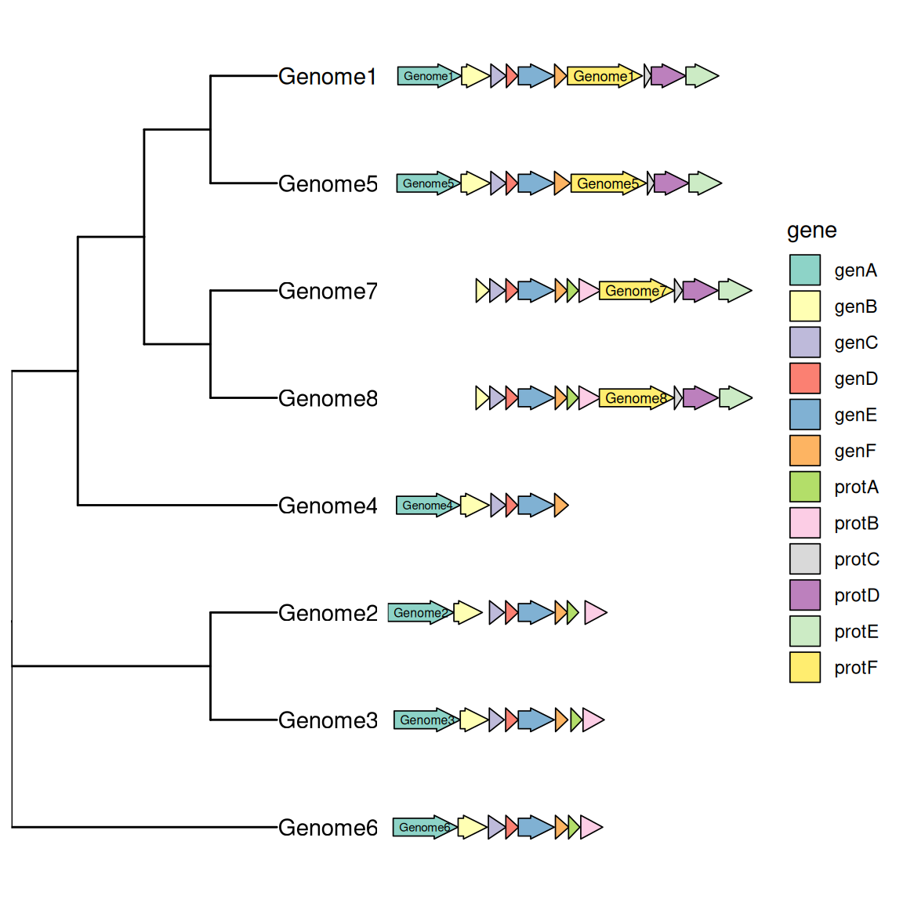
2. 图像美化
2.1 theme_genes 主题
在gggenes中，有一个名为theme_genes的图像主题，非常适合用于绘制基因结构：
# theme_genes主题
ggplot(example_genes, aes(xmin = start, xmax = end, y = molecule)) +
geom_gene_arrow() +
facet_wrap(~ molecule, scales = "free", ncol = 1) +
theme_genes()
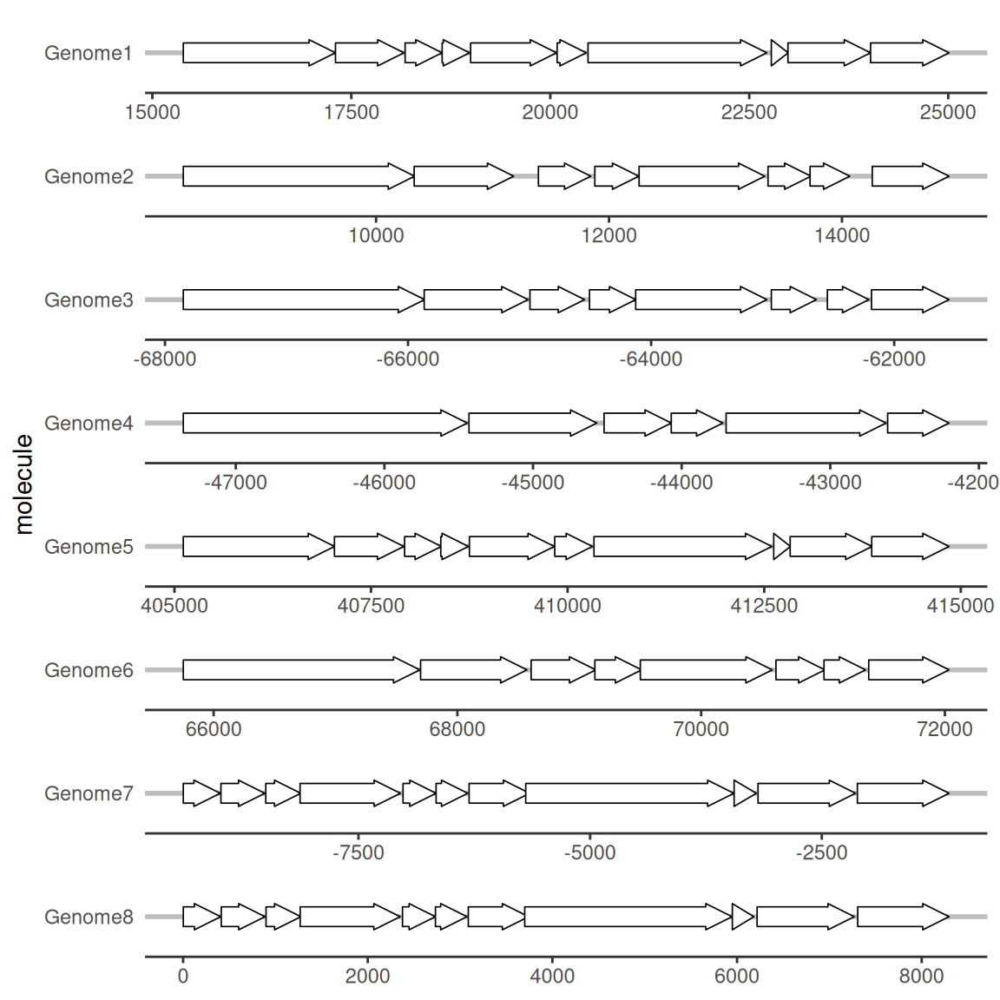
2.2 修改颜色
对不同的基因添加颜色(子结构同理，不再赘述)：
# 修改颜色
ggplot(example_genes, aes(xmin = start, xmax = end, y = molecule, fill=gene)) +
geom_gene_arrow() +
facet_wrap(~ molecule, scales = "free", ncol = 1) +
theme_genes()
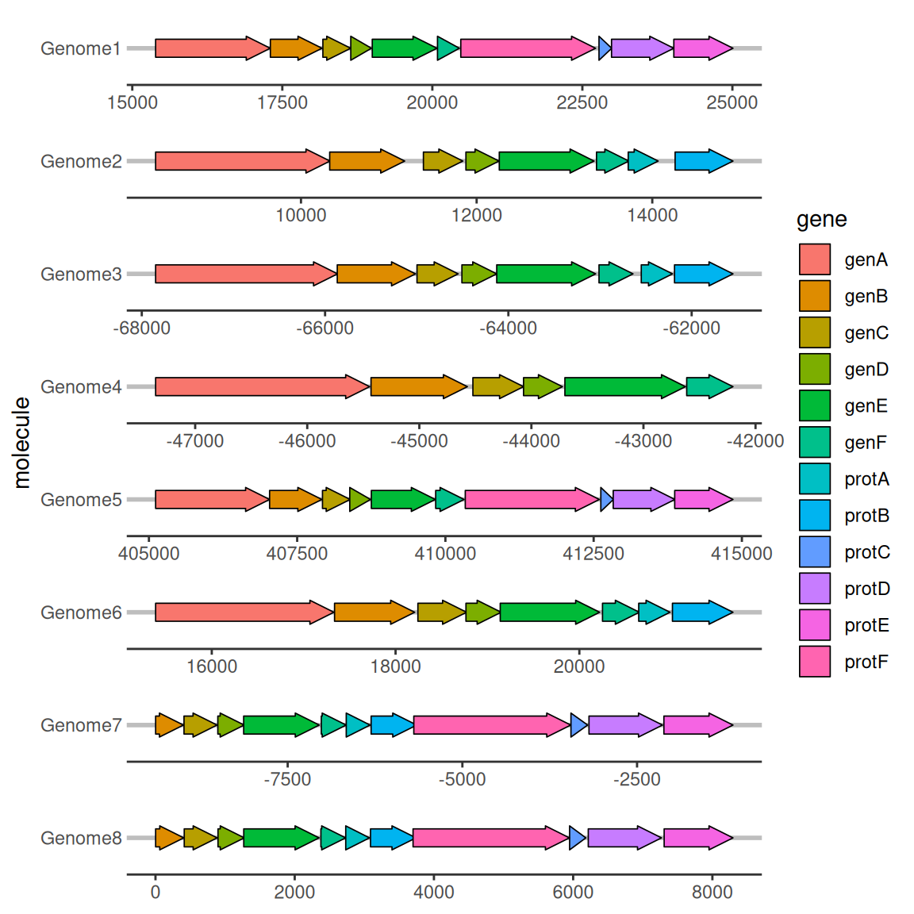
更换配色方案可以使用调色板或者手动设置：
# 修改颜色
ggplot(example_genes, aes(xmin = start, xmax = end, y = molecule, fill = gene)) +
geom_gene_arrow() +
facet_wrap(~ molecule, scales = "free", ncol = 1) +
scale_fill_brewer(palette = "Set3") +
theme_genes()
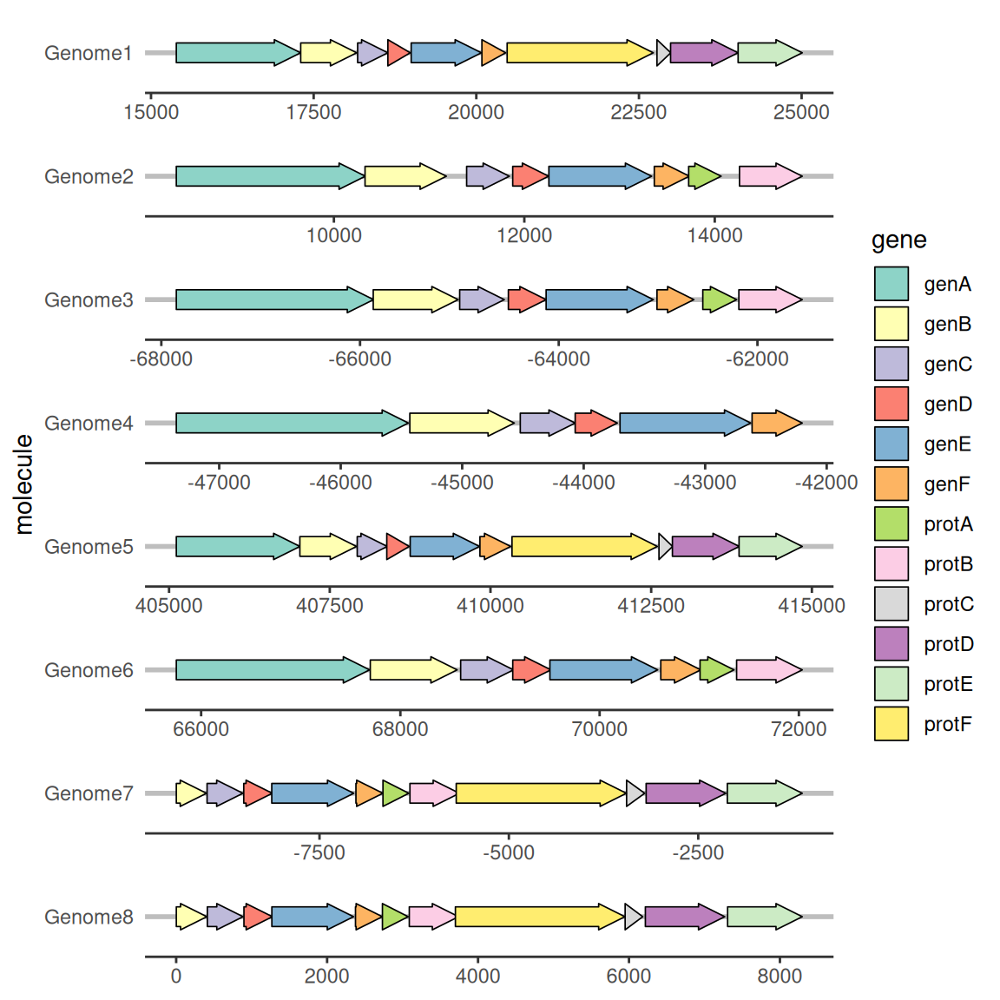
自定义配色：
# 修改颜色
ggplot(example_genes, aes(xmin = start, xmax = end, y = molecule, fill = gene)) +
geom_gene_arrow() +
facet_wrap(~ molecule, scales = "free", ncol = 1) +
scale_fill_manual(values=c("genA"="#266CAF",
"genB"="#BF3237",
"genC"="#54AC78",
"genD"="#FBD75F")) +
theme_genes()
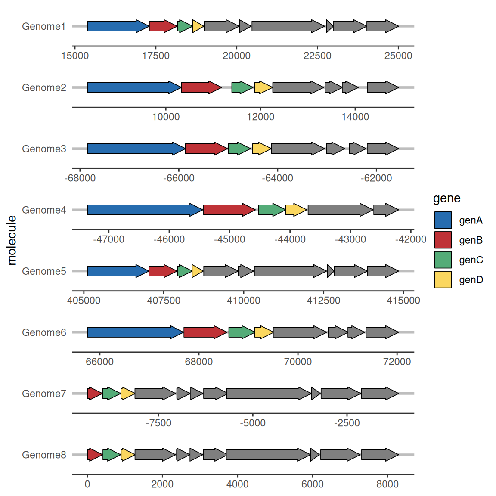
2.3 为基因添加标签
添加基因标签需要使用geom_gene_label扩展函数，该函数只需要额外定义一个label映射即可
# 为基因添加标签
ggplot(example_genes, aes(xmin = start, xmax = end, y = molecule, fill = gene)) +
geom_gene_arrow() +
geom_gene_label(aes(label = gene),align = "left") +
facet_wrap(~ molecule, scales = "free", ncol = 1) +
scale_fill_brewer(palette = "Set3") +
theme_genes()
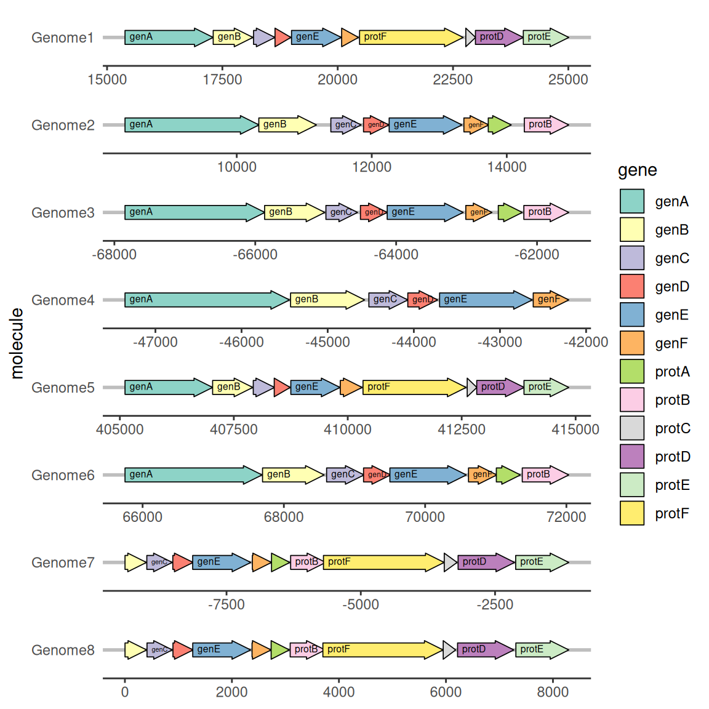
2.4 修改基因箭头形状
想要修改箭头性状需要用到geom_gene_arrow中的两个参数：arrowhead_height arrowhead_width，分别定义箭头的高度与宽度
# 修改基因箭头形状
ggplot(example_genes, aes(xmin = start, xmax = end, y = molecule, fill = gene)) +
geom_gene_arrow(arrowhead_height = unit(3, "mm"), arrowhead_width = unit(1, "mm")) +
facet_wrap(~ molecule, scales = "free", ncol = 1) +
scale_fill_brewer(palette = "Set3") +
theme_genes()
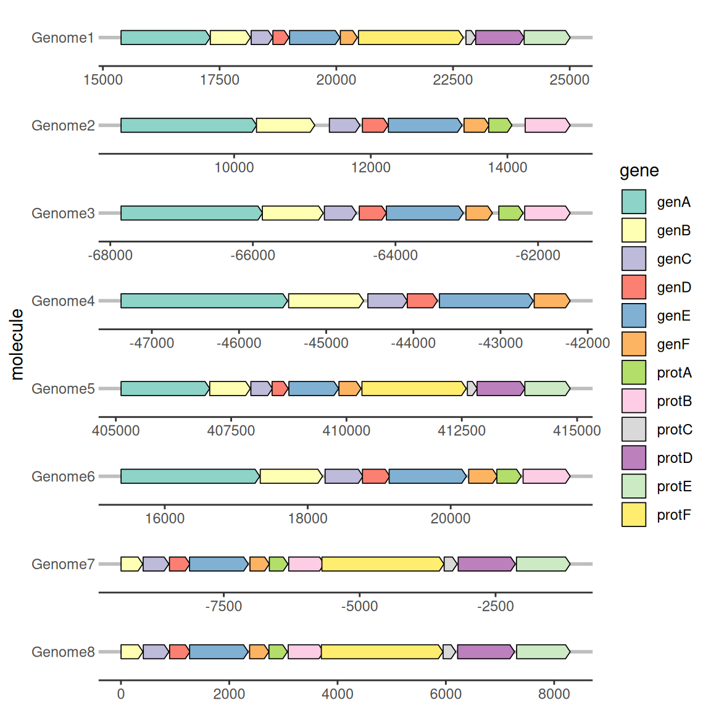
2.5 修改基因的方向
修改基因方向一般需要设置forward映射，映射列的内容必须是可以转化为布尔值的值，例如：0/1，T/F，TRUE/FALSE，”True“/“False”等，可以使用as.logical函数自行判断。 在没有设置的情况下，基因的箭头默认指向xmax的方向，当设置forward的映射后，布尔值为TRUE的基因指向xmax的方向，布尔值为FALSE的基因指向xmin的方向。因此如果在你的数据中xmin和xmax本身就带有方向性，也可以不进行forward映射。
# 修改基因的方向
ggplot(example_genes, aes(xmin = start, xmax = end, y = molecule, fill = gene, forward = orientation)) +
geom_gene_arrow() +
facet_wrap(~ molecule, scales = "free", ncol = 1) +
scale_fill_brewer(palette = "Set3") +
theme_genes()
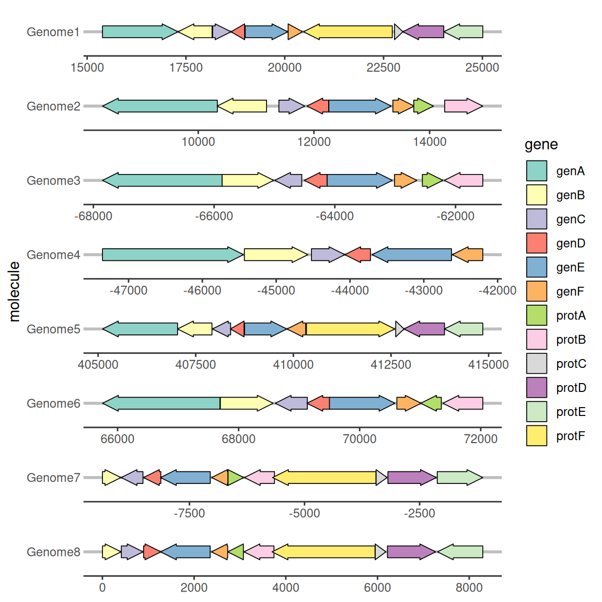
应用场景
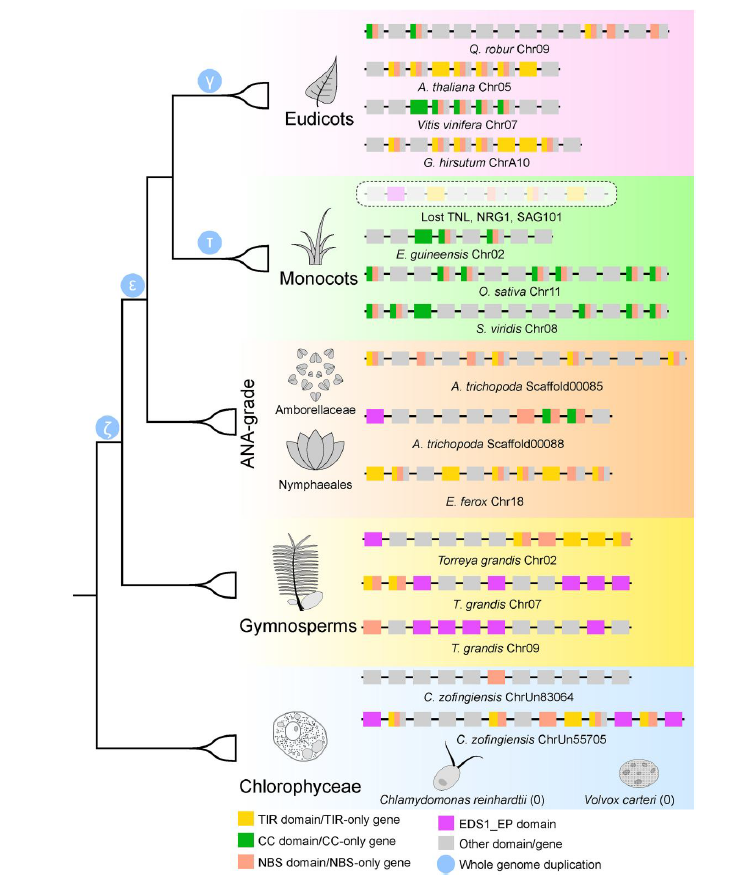
图中展示了植物在进化过程中，NLR基因的丢失分化模型 [1]。
参考文献
[1] Guo BC, Zhang YR, Liu ZG, Li XC, Yu Z, Ping BY, Sun YQ, van den Burg H, Ma FW, Zhao T. Deciphering Plant NLR Genomic Evolution: Synteny-Informed Classification Unveils Insights into TNL Gene Loss. Mol Biol Evol. 2025 Feb 3;42(2):msaf015. doi: 10.1093/molbev/msaf015. PMID: 39835721; PMCID: PMC11789945.